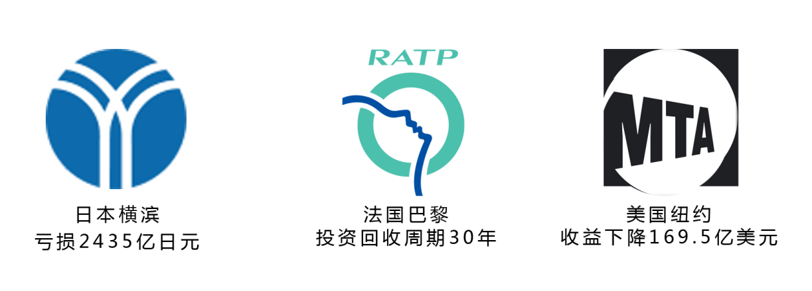
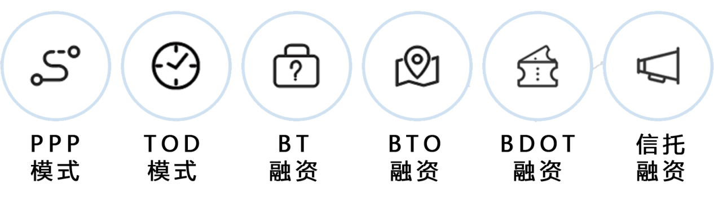

“世界那么大，我想去看看。”
这一句话，承载着许多人的美好愿望。然而，由于交通的不便利，或其他种种原因，人们很少率性去看看这个世界。以前从北京圆明园到故宫20公里，通过公交和步行的方式往往需要半天的时间，而如今，这一时间因地铁线路的完善已缩短为45分钟左右，地铁线路的开通和完善正在改变着中国人的生活版图。
早年间，我们总会感叹国外的发达，看着从纽约时代广场地铁口的人潮涌动，日本新干线列车飞驰、欧洲之星给的高速运转，总是令国人非常羡慕。但随着中国经济的发展，中国地铁从无到有、从少到多，我国地铁建设不断进步，全球竞争力不断增强，并展示出世界城市交通建设史上前所未有的发展规模。
众所周知，地铁是现代城市交通的主流和方向，其运量大，速度快，能耗低，被誉为现代城市的大动脉，是一座城市融入国际大城市现代化交通的显著标志。
中国改革开放的辉煌成果，促成了今天全国城市地铁交通事业的高速发展。四十年来，我国地铁经历了二十多年的建设积累过程以及十多年的快速发展进程。至 2018年底，我国已有 34 个城市开通城轨交通并投入运营，运营线路共计 165 条，累计运营里程达5581.6km。
1969 年 10 月 1 日“北京站—苹果园站”开通运营21 km，成为我国第一条开通的地铁线路。针对当时的国际形势，城轨交通兼具极高的战备、防空和疏散等功能。
随着我国城镇化的不断推进，交通拥堵和环境污染成为亟待解决的问题，各城市对高效率、低能耗的交通建设需求日益增加。2000 年起我国地铁建设开始提速，进入快速发展时期。长春、大连、深圳、武汉、成都等城市相继建成并投入运营。
我国各城市地铁里程中上海、北京、广州排名领先，因地域不同各个城市的城轨交通发展亦应具有其独立的个性，南京、重庆、武汉、深圳和成都紧随其后。由于各城市地铁建设专项资金和维护管理主要来自于市级财政收入，其中大量的国有土地使用权出让收入成为了地方政府的首选，这推动了我国城轨交通的快速发展，我国仅用了十几年便走完了发达国家百年走过的历程。
为了满足人们“不用等太长时间”就能快速出行的愿望，地铁运行的时间间隔被设定在10分钟以下，站内相反方向的列车几乎同时到达，最大输送能力可以达到 3—5 万人/小时，因此地铁具有远超常规地面公交的输送能力，并吸引了大量乘客的出行。
根据我国交通运输部数据，2019年1月至3月全国28个已开通地铁的城市中，北京市地铁运营客流位居第一，高达9亿余人次；上海、广州客流分别为8亿余人次和7亿余人次，位列全国第二和第三。
与公共汽车等其他道路交通方式相比，地铁不会遇到“堵车”的情况，极大的保证了人们的出行效率。值得一提的是，我国地铁班次多，而且在车站的停车时间比较短暂。因此，轨道交通的综合运力比道路交通的综合运力要好得多。
除了满足人们日常出行的要求，在法定假期来临之前，各大城市的地铁运营方会强化运营指挥，优化备车投用，保障运力供应、确保运营安全有序。2019年五一劳动节法定节假日调整为5月1日（周一）至5月4日（周六），共四天，各城市的地铁日平均客流均高于2018年五一节地铁客流。
据环球网出游数据报告显示，武汉、成都、重庆等城市最受游客青睐，其中武汉根据对客流的预测情况，全网提前半小时开班运营，并且在高峰时段增加列车上线，缩短行车间隔，以保证游客出行效率。北京、深圳和广州等城市车站也提前制定完善了应急预案，储备充足应急票，一旦发生大客流爆满，将及时启动预案，全力确保市民游客的安全出行。
客流的逐年增加一定程度上反映了人们出行方式结构的更新，为了使购票方式更加便捷和响应国家智慧出行政策的号召，各城市的地铁同时也在不断提高自身服务水平。
我国从2015年各城市地铁开始实行互联网购票方式，截止到2019年4月，我国34个地铁开通城市移动支付方式全部覆盖。随着移动互联、大数据、云计算等技术的快速发展，移动支付的方式也开始多样化，主要包括支付宝、微信等电子二维码和华为Pay，苹果Pay，三星Pay等NFC购票方式。
地铁购票方式的多元化，不仅省去了之前现金交易的繁琐流程，还降低了地铁的经营成本。成都市民李先生接受采访说，现在出门只需要带手机，完全没有不带钱包出门的烦恼，但是如果外出旅游还会遇到不同的麻烦。
随着人们对地铁票务系统互联互通的呼声越来越高，各城市开始着手解决业内发展诉求和倾听社会公众心声。例如广州正在建设“智慧地铁示范站”，以数据驱动实现智能化的服务，争取在2035年实现全网互联互通。但想要真正实现“一张票、一张网、一串城”便民高效的地铁购票系统，我国地铁建设还有很长的路要走。
随着时间推移，我国部分城市出现了地铁规划过度超前、建设规模过于集中、资金落实不到位等问题。2018年3月国家发改委叫停14个城市的地铁建设项目，国务院出台文件，提高城市地铁申报建设的经济门槛，将地区生产总值GDP指标从原有的1000亿元变成了3000亿元。
修建地铁其实是一项很“烧钱”的工程。
以包头为例，2016年获批承建，2017年8月被叫停。包头市2016年全年一般公共预算收入271.2亿元，但其地铁项目投资却超过300亿，政府几乎无法实现收支平衡。
从各城市地铁建设成本状况可以看出，北上广三城排名领先，其中上海地铁年均投资近120亿元，新一线城市地铁的年均政府投资均在100亿左右。可见，我国政府对地铁的投资巨大。
发改委新闻发言人赵辰昕透露，地铁造价成本1公里达7亿元，整个行业最缺的就是钱。当前，城市轨道交通建设资金主要来源是政府财政资金和间接融资。这就意味着，如果当地财政收入与基建项目金额的不匹配，将为地方政府带来了较大的财政负担。

纵观全球城市的地铁营收现状，日本除了东京银座线、丸之内线等几条市区线路，据横滨市交通局会计报表数据显示，横滨市累计亏损2435亿日元（151亿人民币）；美国大都会运输署数据显示，2018年纽约市地铁载客量持续下降，公共交通收益下降169.5万美元（1154万人民币）;巴黎地铁也存在相应的问题，据RATP巴黎运输公司数据显示，除了公交车基本实现财务收支平衡，地铁收入陷入赤字经营已是常态，巴黎市政府预计投资回收周期长达30年。
因此，政府应该综合考虑建设和运营全生命周期的资金保障，避免出现“建得起养不起”的局面。各城市地铁应增强自我经营能力，大力开展广告、商铺租赁、地产开发等其他多元化业务，并依托城轨物业、商业等资源反哺运营。
在全球地铁运营入不敷出的普遍状况下，我国把购票作为地铁主要收入来源之一，以降低地铁营收风险。除北京、深圳、杭州、青岛4城部分线路外，我国其余30个城市几乎无法实现基本收支平衡。
对比各城市计价规则，我国地铁票价普遍偏低。起步价一般是2元，起步里程在6公里以内，超出起步距离后根据路程计算，坐得越远，单位价格越低。其中北上广的地铁票价高于其他城市，起步价为3元。在日常出行距离0-30km中，各城市也只需要花费5-8元不等。
2019年初，武汉、南京、深圳和沈阳四个城市把保持了10年之久的地铁票价，进行不同幅度、不同方式地涨价，希望通过提高地铁价格保本运营，减轻财政负担和缓解客流压力。
武汉由原先2元起步价可以坐9公里，现在只能坐4公里；南京起步价里程由此前的10公里缩短到4公里；沈阳起步里程变为2元6公里；深圳成为全国第三个“3元起步”的城市。
地铁涨价对依赖地铁出行的市民产生较大影响。以深圳为例，对于张奶奶而言，平时乘坐地铁去3km以外的商场买菜，每天乘坐2次地铁，虽然涨价前她每月支出120元，涨价后每月需要多付60元通勤费，但她对地铁价格浮动表示理解。
深圳物价局相关负责人表示，除了将票价涨价，也会考虑创新地铁的经营模式，以增加地铁的营收，提升地铁运营可持续发展和高质量全面发展，地铁服务质量也会随之增加，其中包括提升地铁运行速度、减少车次间隔、地铁WiFi全覆盖，以及结合当下人工智能等技术，向智能地铁时代迈进。
我国虽然是地铁建设大国，但并不是地铁建设强国，未来我国将着力建设智慧地铁，增强自主创新能力，引领城市轨道交通向创新经济模式和智能化方向迈进。

现今全球大部分城市都处于政策性亏损阶段，各国采用的地铁项目主要包括PPP模式，TOD模式、BT融资、BTO融资、BDOT融资、信托融资等10余种融资模式。其中香港地铁作为盈利的代表，采用PPP运营和TOD模式，政府与社会资本合作，主要资金来自各类融资，大大降低了政府负担。同时以地铁为导向的沿线区域，发展收益为一体“地铁+地产”的盈利模式，使沿线各站形成许多新的繁华地区，沿线地产不断增值，能极大提高营收。
地铁作为衡量城市发展程度的重要标志, 是整个城市乃至全国的经济动脉，当地政府和企业必须要探索多元化的发展模式，增强自我造血功能, 营收平衡以缓解地方城市的财政压力，甚至港铁一样带来收益，促进城市发展。
随物联网、大数据、云计算、人工智能等技术的普及，智慧地铁是未来发展的新趋势，包括刷脸进站实现“无感乘车”，实时查看拥挤程度的便民服务APP等其他实现人们智慧出行的技术。
为了解决客流监测滞后性高、客流预测准确率低和共享时效性差的痛点，各城市正着力建设移动互联实时监测的地铁小程序和APP应用。2018年初，北京地铁推出“实时查询拥挤度”的新功能，乘客通过查看当前线路拥堵和故障情况，进而选择相应的换乘。上海、广州、成都等城市也相继推出了地铁拥堵状况查询等服务。
同时，为了改善人们出行方式和提高乘车满意度，未来我国各城市将推行无感乘车方式，提前录入个人身份信息，通过外貌特征识别乘客身份，人们将不再依赖实体车票和手机扫码直接进站，无感通行，方便顺畅。
回顾过去，我国地铁建设足音铿锵。从1969年第老一代地铁人靠战天斗地的革命精神，开创中国城轨交通的新纪元，到2019年我国里程建设位列世界第一，地铁极大地缓解了城中交通压力，优化城市空间结构，给现代城市注入了强大的生机。
把握现在，我国地铁建设坚定信心。近年来，基于我国经济增长的客观现实和对地铁建设投资与回报风险的谨慎考量，从造价到运营，把握节奏，有序推进，以确保地铁可持续发展。
展望未来，我国地铁建设前景可期。如何把握机遇，建设资源节约型、环境友好型、技术创新型和安全便捷型的智慧地铁，必须在创新上矢志不渝，不断超越；在质量上站稳脚跟，不断突破。未来我国地铁建设在2020 年进入创新型国家行列、2035 年跻身创新型国家前列，到本世纪中叶建成现代化城市轨道交通强国奠定了基础，实现中国地铁强国梦！